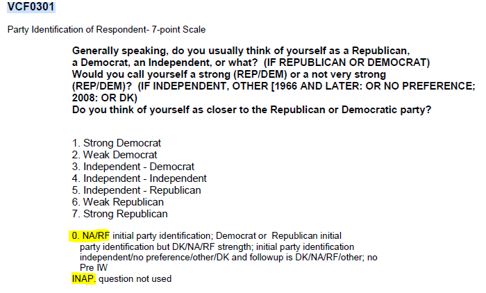
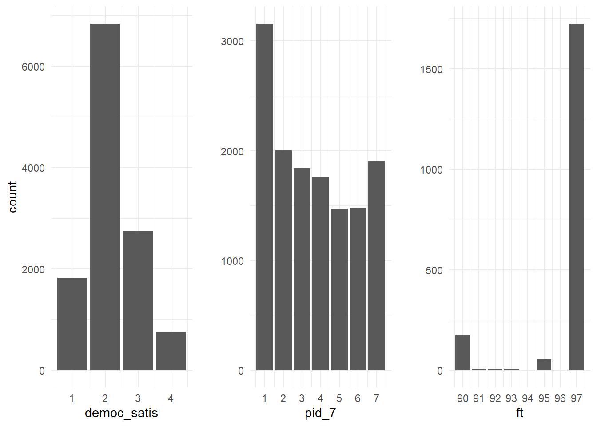

ANES Headaches and Headscratchers
An incomplete collection of eccentricities in the American National Election Study
The American National Election Study (ANES) is one of the longest running survey datasets, stretching back to 1948—offering public opinion researchers excellent continuity over a broad base of questions. ANES data is hosted either as individual survey years, or in the “cumulative data file” (CDF), which coalesces each biennial (or quadrennial) iteration of the survey into a single dataset.
The ANES-CDF certainly hews closer to the ideal of
tidy data than some canned datasets but is not without its share of eccentricities. I’m cataloging some of the (occasionally baffling) coding choices made by the ANES here, in the hopes that it might save some other public opinion researcher—especialy a hapless grad student—a few minutes hours of headache down the road.
The CDF does not include every question from the individual surveys.
This is not so much a mistake on the part of the ANES, but isn’t immediately apparent. The cumulative data file does not contain an exhaustive collection of all of the questions asked by the ANES each year. I’m currently working on a project involving within-party divisions, and wanted information about primary vote-choice. Thinking I was clever, I opened the cdf codebook and tried (to no avail) to find a question asking for whom respondents voted for in presidential primaries. Broken, defeated, and wondering why the ANES wouldn’t ask such an obvious question; I wearily turned to Google where I stumbled across the ANES Continuity Guide. Using the surprisingly well designed tool, I discovered that the question I was hoping to find was asked by the ANES occasionally, but for what I’m sure is a very good reason is excluded from the CDF (please version control the CDF).
If the variable you want to pull isn’t in the CDF, still take the time to look through the continuity guide. The ANES may have what you’re looking for if you’re willing to stitch together a few different files.
The
codebook seems to be wrong about NA values.

According to the ANES-CDF
codebook, NA values are given a numeric code. For example, the codebook tells us that the 7-point party ID variable is coded such that 0 indicates NA and INAP indicates that the question was not asked. Similarly, the
codebook says that feeling thermometers are coded such that 98 and 99 indicate Don't Know and NA respectively, while -8 and -9 represent Don't Know and NA for VCF9255 (satisfaction with democracy).
Let’s not rely on the
codebook. Using Rcode, I’ll pull a few variables to check how they’re coded:
# pulling anes-cdf from a GitHub repository
cdf <- rio::import("https://github.com/RobLytle/intra-party-affect/raw/master/data/raw/cdf-raw-trim.rds")%>%
select(VCF0004, #year
VCF0218, #Democrat FT
VCF0224, #Republican FT
VCF0301, #Party ID
VCF9255, #Satisfied/not with Democracy
#education 7cat
)%>%
rename(year = VCF0004, #renaming variables
ft_dem = VCF0218,
ft_rep = VCF0224,
pid_7 = VCF0301,
democ_satis = VCF9255,
)%>%
filter(year >= 2004)%>% # democ_satis isn't asked until 2004, so I'm trimming the data for ease of illustration
glimpse()
## Rows: 13,718
## Columns: 5
## $ year <dbl> 2004, 2004, 2004, 2004, 2004, 2004, 2004, 2004, 2004, 2...
## $ ft_dem <dbl> NA, 85, 15, 50, 30, 30, 30, 70, 50, 15, 85, 60, 70, 40,...
## $ ft_rep <dbl> NA, 40, 85, 97, 85, 30, 60, 50, 30, 97, 60, 60, 50, 60,...
## $ pid_7 <dbl> 4, 3, 7, 4, 7, 4, 7, 2, 3, 7, 3, 3, 3, 6, 3, 3, 3, 6, 4...
## $ democ_satis <dbl> 2, 1, 2, NA, 1, 3, 1, 1, NA, 1, 2, 2, 3, 2, 2, 3, NA, 1...
Just by
tidyverse::glimpse()ing the data, we can tell that there are, in fact, NA values, contrary to what the
codebook says, but let’s be certain. I’ll throw together a quick visualization of the frequency of each variable’s values.
# Making quick ggplots of frequencies
democ <- ggplot(cdf, aes(x = democ_satis)) +
geom_bar(aes(y = stat(count)))
pid <- ggplot(cdf, aes(x = pid_7)) +
geom_bar(aes(y = stat(count)))+
scale_x_continuous(breaks = seq(1, 7, by = 1))+
labs(y = " ")
ft <- cdf%>%
pivot_longer(ft_dem:ft_rep, names_to = "name", values_to = "ft")%>% #combining D and R fts into one column
filter(ft >= 90)%>% # just filtering high FTs to make visualization easier
ggplot(aes(x = ft)) +
geom_bar(aes(y = stat(count))) +
scale_x_continuous(breaks = seq(90, 100, by = 1)) +
labs(y = " ")
#putting each visualization into a single object
gridExtra::grid.arrange(democ,
pid,
ft,
ncol = 3)

Sure enough, none of the values DK/NA/RF values denoted in the
codebook actually appear in the CDF. It seems as though they were switched to NA when the dataset was prepared.
Some responses are truncated.
Feeling thermometer questions ask respondents to rate their warmth towards a group (like “Democrats” or “Catholics”) on a scale from 0–100. As seen above though, the ANES feeling thermometer variables max out at 97. 98 and 99 are (supposedly) reserved for NA/Don't Know—though that convention is not currently in use. Likely this was done to save space and avoid 3-digit numbers. Size may have been a valid concern in a time before several-terabyte harddrives were commonplace, but serves no purpose now.
From the researcher’s perspective, this truncation is troublesome, but not disastrous. Net group affect—a common measure of polarization (e.g.,
Iyengar, Sood, and Lelkes 2012)—is measured as \(FT_{in} - FT_{out}\). Since the ANES coding scheme essentially subtracts 3 from a sizeable chunk of respondents’ in-party scores (notice how many 97s there are relative to other high-end responses) studies that use net group affect or something similar are likely to underestimate the degree of polarization—albeit by a small degree.
These aren’t the only instances of truncation or a misleading codebook entry, here is an example of a variable in which the variable’s levels varied year to year—not noted in its codebook entry.
Takeaways
The lesson here is to always validate for yourself what is claimed by a dataset’s documentation. These problems usually are not deadly, just easily missed. Implementing some kind of version control on the CDF would presumably make it easier to improve the dataset and fix these headaches without breaking existing scripts/analyses.